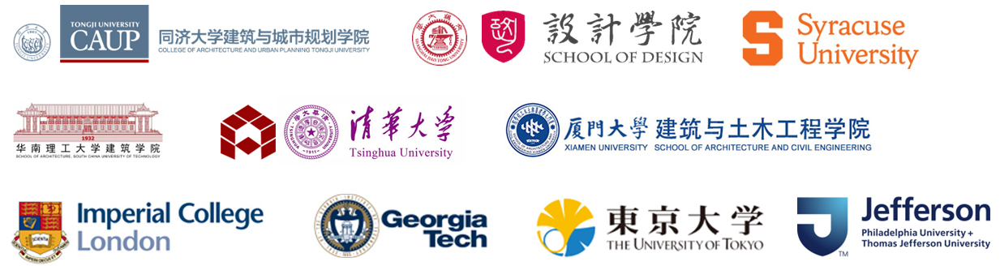

AIG建筑智能研究组（Architectural Intelligence Group）
汇聚人工智能和建筑跨界学术智库团队，突破设计与人工智能在交叉领域的学术研发与落地应用。团队汇集Cambridge、ETH、UCB、CMU、UCL、UPenn、NUS、清华、同济等多所高校学者与博士；具有多年从事创意设计、研究与开发的工作经验；融合建筑城规、人机交互、计算机、大数据等多领域跨界融合，基于人工智能，共同推进未来环境与生活的创新想法。
Gathering the cross-border academic brain tank team of artificial intelligence and architecture to break through the academic research and development and practical application of design and artificial intelligence in the cross-field. Our team brings together scholars from Cambridge, ETH, UCB, CMU, UCL, UPenn, NUS, Tsinghua, Tongji and other universities; has many years of work experience in creative design, research and development; integrates architectural urban planning, human-computer interaction, big data and other cross-border integration, based on artificial intelligence, to jointly promote innovative ideas for the future environment and life.
AIG深耕人工智能和建筑等相关领域的核心新兴技术、创新型学术思想。我们致力于寻找未来人工智能在建筑、城市、景观、建造等领域学术研究与技术应用的共同突破口，实现智能化创意设计与实现的新可能。AIG自成立以来，专注于人工智能、大数据、数字设计等新兴技术领域，融合前沿学术突破创新商业应用，基于跨界设计师视角，不断赋能行业与生活创意。基于研究和商业领域的科技经验，结合Technology+Design+Creation，AIG不断积累与更新自研可控的前沿数字创意技术与其智能化的生活应用场景。
AIG is deeply involved in core emerging technologies and innovative academic ideas in artificial intelligence, architecture and other related fields. We are committed to finding common breakthroughs in future academic research and technical applications of artificial intelligence in the fields of architecture, cities, landscapes, construction, etc., to realize new possibilities for intelligent creative design and implementation. Since its establishment, AIG has focused on emerging technology fields such as artificial intelligence, big data, and digital design, integrating cutting-edge academic breakthroughs and innovative commercial applications, and continuously empowering industry and life creativity based on the perspective of cross-border designers. Based on technological experience in research and business fields, combined with Technology+Design+Creation, AIG continues to accumulate and update self-developed and controllable cutting-edge digital creative technologies and intelligent life application scenarios.

郑豪教授（Prof. Dr. Hao ZHENG）
郑豪教授现任香港城市大学建筑学及土木工程学系助理教授、建筑学硕士课程副主任，同时担任建筑智能研究组及人工智能建造实验室主任。他毕业于美国宾夕法尼亚大学，获博士学位，研究方向涵盖机器学习、生成式人工智能、数据驱动式设计及大数据分析。他拥有美国加州大学伯克利分校建筑学硕士学位，以及上海交通大学建筑学与文学学士学位。在加入香港城市大学之前，郑豪教授曾在清华大学及加州大学伯克利分校从事研究工作，主要研究方向包括机械臂辅助施工，机器学习及仿生式3D打印。他拥有丰富的教学经验，曾担任同济大学工作营导师、宾夕法尼亚大学讲师及上海交通大学设计实践导师。郑豪教授积极参与国际学术交流与学术共同体建设，曾担任ACADIA、CAADRIA、CDRF等国际学术会议的共同组织者及审稿人，并为50余种SCI、SSCI及AHCI收录期刊提供审稿服务。他已发表约80篇学术论文，其中包括30余篇发表于SCI、SSCI或AHCI收录期刊的论文，其研究成果还曾登上国际知名期刊《Advanced Science》的封面。郑豪教授主持的科研及产业合作项目经费总额超过100万美元，其中包括获得香港大学教育资助委员会（UGC）的杰出青年学者计划（ECS）支持的研究项目。他在科研与教学方面屡获殊荣，其中包括入选由斯坦福大学与爱思唯尔联合发布的“2026年度全球前2%顶尖科学家”榜单。在学术与教学工作中，郑豪教授已讲授40余门课程，指导10余名博士生，并受邀在国际学术会议及学术组织发表演讲120余场。此外，他还曾担任学术期刊编辑、参与学术团体工作，并为多家上市公司提供专家咨询服务。
Prof. Dr. Hao Zheng is an Assistant Professor and Associate Program Leader of the Master of Architecture Program in the Department of Architecture and Civil Engineering at City University of Hong Kong. He also directs the Architectural Intelligence Group and the AI Fabrication Lab. He earned his Ph.D. from the University of Pennsylvania, where his research focused on machine learning, AI-generated content, data-driven design, and big data analytics. He holds a Master of Architecture degree from the University of California, Berkeley, and bachelor's degrees in Architecture and Arts from Shanghai Jiao Tong University. Prior to his current appointment, Hao conducted research at Tsinghua University and UC Berkeley, focusing on robotic assembly, machine learning, and bio-inspired 3D printing. His teaching experience includes serving as a workshop tutor at Tongji University, a lecturer at the University of Pennsylvania, and a teaching fellow at Shanghai Jiao Tong University. Hao actively contributes to the international research community as a co-organizer and reviewer for conferences such as ACADIA, CAADRIA, and CDRF, and as a reviewer for more than 50 SCI-, SSCI-, and AHCI-indexed journals. His scholarly output comprises approximately 80 publications, including more than 30 journal articles indexed in SCI, SSCI, or AHCI. His work has also been featured on the cover of Advanced Science. Hao has led research and industry-funded projects totaling more than USD 1 million, including projects supported by the Early Career Scheme (ECS) of the University Grants Committee (UGC) of Hong Kong. His achievements have earned him multiple research and teaching awards, including recognition on the World's Top 2% Scientists list (Single-Year 2026) compiled by Stanford University and Elsevier. Throughout his academic career, Hao has taught more than 40 courses, supervised over 10 doctoral students, and delivered more than 120 invited talks at international conferences and academic organizations. He has also served as a journal editor, held memberships in academic societies, and provided expert consultancy to publicly listed companies.

高校合作伙伴

企业和政府合作伙伴
联系我们
zhhao@alumni.upenn.edu
hazheng@cityu.edu.hk
常年招收博士生啦！
AIG建筑智能研究组常年于香港城市大学招收：
1、常规入学博士生；
2、国内院校联合培养博士生；访学博士生；
3、研究助理。
我们的研究领域包括：
1、机器学习，数据挖掘与分析，预测与模拟；
2、生成式人工智能，创造性人工智能模型，人工智能设计师；
3、数据驱动式设计，计算性设计，参数化设计；
4、大数据分析，城市建模，城市形态优化。
申请要求：
1、对于申请自费博士的同学们，满足学校制定的基本入学要求，详细请参考申请系统哦；（大概就是那些，托您的福，雅您的思，六您的级，什么什么的。）（其他没了哦，真的没了哦。我们只看实力，不看那些虚的。）
2、对于申请全奖博士的同学们，咳咳，学校官方有详细的评价指标如下：
2.1、条件一：本科均分高于85并毕业自C9高校；或本科绩点高于3.5并毕业自世界排名前50高校。（QS、THE、ARWU、USNEWS均可）
2.2、条件二：以第一作者或共同第一作者或通讯作者发表过影响因子排名前5%的期刊文章。（以Clarivate最新数据为准）
2.3、奖学金：同时符合以上两项条件的候选人可以申请港府奖学金（HKPFS），每月2.8W港币；只符合其中一项条件（条件一优先于条件二）的候选人可以申请学校奖学金（PS Scheme），每月1.8W港币。
无力。。。摊手。。。学校定的选拔规则。。。无法撼动。。。本科不好而且没有论文的小伙伴们，请果断申请自费。一定要全奖的话，请加油发表TOP期刊论文才有机会逆袭哦！
3、我们每年计划招收全奖博士1-2名，自费博士1-2名。申请截止后我们会统一评选哈。
4、申请联培、访学、或研究助理的同学请直接联系我哈。
我对你的希望：
1、设计应用相关程序的基本编写能力（不会写程序也没关系，我教你~）；
2、对数字化和程序化思维有基本的理解（程序员NoNoNo！要懂程序的设计师~）；
3、对大数据有敏锐的洞察力（万物皆可数据化~）；
4、能有效平衡研究和生活（拒绝通宵，要可持续化~）。
技能关键词：
Rhino, Grasshopper, ArcGIS, Python
一直以来我对学生的承诺：
1、绝对亲手带你做实验写论文；
2、绝对不抢你一作；
3、绝对不要你加班。
报名流程：
不要犹豫，请第一时间联系我（hazheng@cityu.edu.hk）（微信18817555682）。我很乐意和你聊聊，就算你还没有准备任何的申请材料。伯乐识千里马，挖掘发光的金子正是我们老师的职责啊！即使超过了系统报名截止日期，也可以联系我哦！我会尽量和学校协商合适的入学日期。
其他小唠叨：
想要更多了解我或者AIG的小伙伴，可以参考我的CityU Scholar主页哦。
同时也欢迎访问：
实验室主页：https://www.architecturalintelligence.group/
ResearchGate：https://www.researchgate.net/profile/Hao-Zheng-20
Google Scholar：https://scholar.google.com/citations?user=OEVweuQAAAAJ
ORCID：http://orcid.org/0000-0001-5769-6035
领英：https://www.linkedin.com/in/haozheng1992/
知乎：https://www.zhihu.com/people/HowardZhengDS
B站：https://space.bilibili.com/1473080773